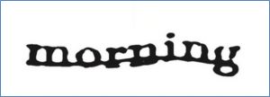

Les CAPTCHAs et l'accessibilité
Introduction
Un CAPTCHA (« Completely Automated Public Turing-test to tell Computers and Humans Apart », en français « Test public de Turing complètement automatisé pour différencier les humains des ordinateurs ») est un test destiné à différencier un utilisateur d’un programme informatique. Il est utilisé notamment sur les formulaires pour se prémunir du SPAM.
Il existe différents types de CAPTCHA, les plus nombreux sont les CAPTCHAs visuels où on demande à l’utilisateur de saisir une série de lettres déformées affichées à l’écran.

Exemple de CAPTCHA visuel
Premier constat : le Captcha et les utilisateurs
Les CAPTCHAs posent souvent des difficultés même pour les utilisateurs les plus aguerris. En effet il est souvent nécessaire d’effectuer plusieurs tentatives avant de répondre correctement à un CAPTCHA. Pour certains utilisateurs la présence d’un CAPTCHA est tout simplement rédhibitoire. Par exemple, un utilisateur non-voyant ne peut pas renseigner un CAPTCHA visuel. Même si certains sites proposent des alternatives, comme un CAPTCHA audio en plus d’un CAPTCHA visuel, dans les faits c’est rarement concluant. C'est d'ailleurs la première source de difficultés citée par les utilisateurs malvoyants d'après le sondage réalisé par le site WebAIM fin 2017 :
Les CAPTCHA pointés du doigt par les utilisateurs malvoyants (sondage WebAIM 2017)
L’explosion des moyens de calcul permet aux bots et autres programmes informatiques d’être de plus en plus performants. Il est aujourd’hui simple de concevoir un programme permettant de deviner le texte inscrit dans une image ou vocalisé dans un fichier audio. Pour que le CAPTCHA reste efficace vis-à-vis des bots, il est donc nécessaire d’accentuer la déformation de l’image ou du son proposé par le CAPTCHA : cela accentue d’autant les difficultés pour l’utilisateur.
C’est pourquoi Google tente de trouver des alternatives pour différencier un utilisateur humain d’un robot. Ils proposent le « No Captcha », une simple case à cocher du point de vue de l’utilisateur. Celui-ci utilise des données annexes telles que la résolution de l’écran, le déplacement du pointeur de la souris ou le temps de saisie d'un formulaire…etc.

No CAPTCHA de Google
Bien que cette solution soit plus efficace, elle n’est pas aujourd’hui satisfaisante en termes d’accessibilité car en cas de doute, un CAPTCHA standard est affiché à l’écran. C’est souvent le cas pour un utilisateur qui ne peut pas utiliser une souris et qui navigue au clavier ou pour un utilisateur qui navigue à l’aide d’un lecteur d’écran (cas des personnes malvoyantes). Il faut donc toujours proposer un moyen de contact alternatif (email, téléphone….) dans le cas où le CAPTCHA ne pourrait pas être renseigné.
Entre les utilisateurs qui ne peuvent pas saisir le CAPTCHA, ceux qui n’y arrivent et ceux qui ne comprennent pas ce qu’il faut faire, la mise en place d’un CAPTCHA n’est pas anodine pour l’audience d’un site. Partant du principe que les CAPTCHAs posent des difficultés à de nombreux utilisateurs, la première recommandation est donc de ne pas utiliser de CAPTCHA.
Deuxième constat : Le CAPTCHA et la sécurité
Dans un article de Google publié en 2014, on apprend qu’une intelligence artificielle obtient un score de 99,8% pour résoudre des CAPTCHAs visuels parmi les plus difficiles, soit un meilleur score que celui obtenu par un « vrai » utilisateur ! Des services sont en effet capables de déterminer la police de caractères utilisée dans une image ou bien de deviner si l’image contient un objet (un chat, une voiture, un chapeau, etc.).
Face à ce constat (fuite des utilisateurs et sécurité incertaine), on en revient à notre première recommandation qui est de ne pas utiliser de CAPTCHA.
Les solutions préconisées
L’idée est donc dans un premier temps de déterminer les risques et de se poser les questions suivantes :
- Quels sont les risques en cas d’attaque ?
- Quel est le besoin réel, entre éliminer les requêtes des bots et apporter une solution sécurisée ?
En fonction des réponses, il s’agit de mettre en place la solution la plus adaptée.
HoneyPot et Time measuring, deux techniques simples à mettre en place pour identifier les bots
Si les risques sont limités, ces 2 techniques ont l’avantage d’être transparentes pour l’utilisateur. La première solution consiste à ajouter un champ masqué à l’écran dans le formulaire. Celui-ci ne sera donc jamais renseigné par un utilisateur. Coté serveur si on constate que ce champ a été renseigné, c’est qu’il s’agit d’un programme malveillant. La seconde technique consiste à mesurer le temps que l’utilisateur met pour saisir le formulaire. Si celui-ci s’avère très rapide, il s’agit très probablement d’un programme malveillant.
Des solutions anti-SPAM et liste noire pour éliminer les requêtes de bots
Il est également possible coté serveur de trier les informations reçues à l’aide d’un logiciel anti-SPAM qui supprime automatiquement les soumissions des logiciels malveillants en analysant les données et l’adresse IP à l’origine de la requête.
Un test logique ou mathématique textuel, appelé aussi Captcha textuel
Il s’agit de simples phrases demandant de recopier un mot, de résoudre une opération mathématique simple, etc.
« Recopier le mot : maison »
« Combien font deux plus deux ? »
« Quel animal fait miaou ? »
« De quelle couleur est le ciel ? »
A condition que les questions restent très simples, ce type de CAPTCHA pose très peu de difficulté aux utilisateurs. Comme il est précisé dans la notice du site acceDe Web une bonne pratique dans ce cas consiste à prévoir une solution de rafraîchissement, très utile pour les personnes déficientes cognitives.
Une vérification par email, SMS ou téléphone pour une sécurité renforcée
Cette solution consiste à envoyer un email, un SMS ou à téléphoner directement à l’utilisateur pour que celui-ci confirme la transaction en cliquant sur un lien ou en renseignant le code indiqué.
C'est à la fois à la fois plus contraignante pour l’utilisateur qui doit communiquer des informations personnelles et plus lourd à mettre en place mais c’est une solution très efficace quand un niveau de sécurité fort est nécessaire.
Pour récapituler
Il n’existe pas de solutions parfaites ni pour l’utilisateur, ni en termes de sécurité. L’idée est d’opter pour la technique la plus juste en fonction du service proposé. Il est important par ailleurs en cas d’attaque d’avoir des logs pour analyser et contrer les attaques ultérieures.